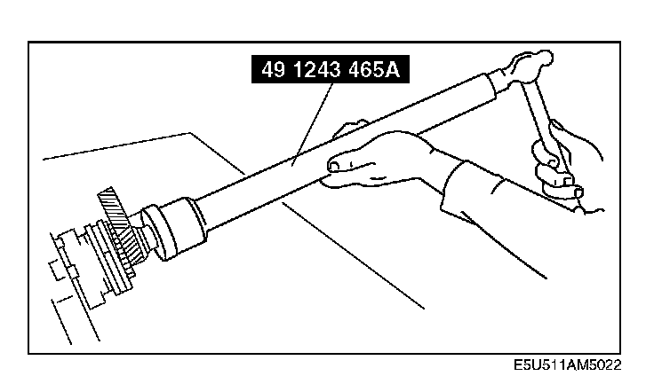
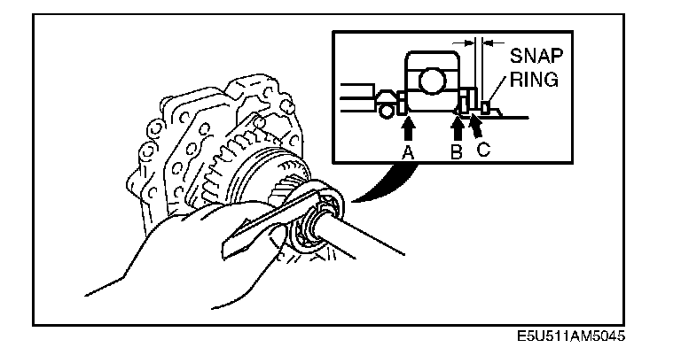

Mainshaft Rear Bearing Assembly Note
Mainshaft Rear Bearing Assembly Note
1. Install the mainshaft rear bearing using the SST, and fully seat it against the front C-washers.
2. Install the original C-washers and hold them with the retaining ring.
3. Install the washer and new snap ring.
4. If the C-washers do not fit into the rear mainshaft groove, select the proper thickness C-washers.
5. Verify that C-washers installed at one position are of the same thickness.

6. With points A through C pressed tightly together, measure the clearance between the washer and snap ring. If the clearance is not as specified, select the proper C-washers.
Clearance between washer and snap ring:
0 - 0.1 mm (0 - 0.004 in)
C-washer thickness:
2.9 mm (0.114 in), 3.0mm (0.118 in), 3.1mm (0.122 in)